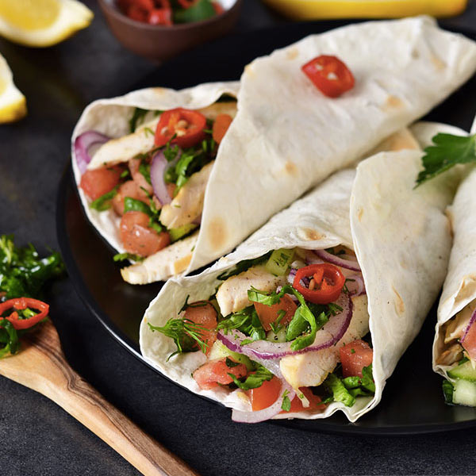

- 350 gramos de pechuga de pollo
- 1 pimiento verde
- 1 pimiento rojo
- 1 cebolla grande ó 2 cebollas medianas
- Sazonador de fajitas
- Guacamole
- Aceite de oliva virgen extra
- Tortillas de trigo
- Cortar la cebolla en tiras de medio dedo de grosor
- Ídem para los pimientos
- Proceder de la misma forma con la pechuga de pollo (partir por la mitad si son demasiado largas)
- Poner una sartén al fuego y calentar a fuego medio-fuerte con abundante aceite de oliva
- Sofreír las verduras hasta que estén bien doradas y pochadas
- Introducir las tira de pollo y bajar a fuego medio
- Echar el sazonador y un culín de agua
- Dejar cocer hasta que el pollo esté bien cocinado (5-7 min)
- En un plato, calentar las tortillas y poner una a cada comensal
- Untar generosamente la base de la tortilla con guacamole
- Poner fajitas al gusto en la tortilla
- Enrollar y disfrutar